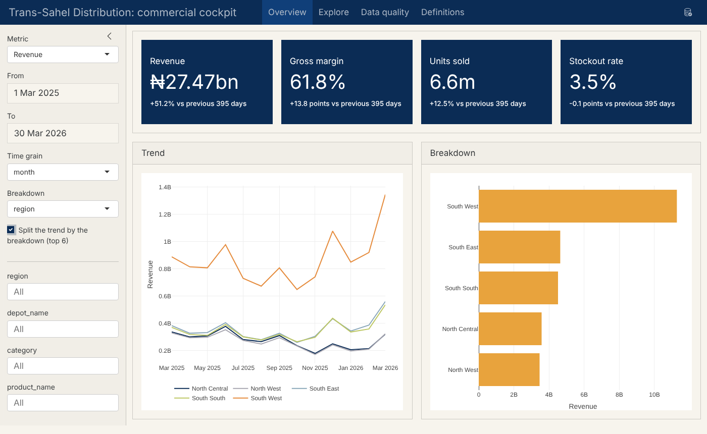
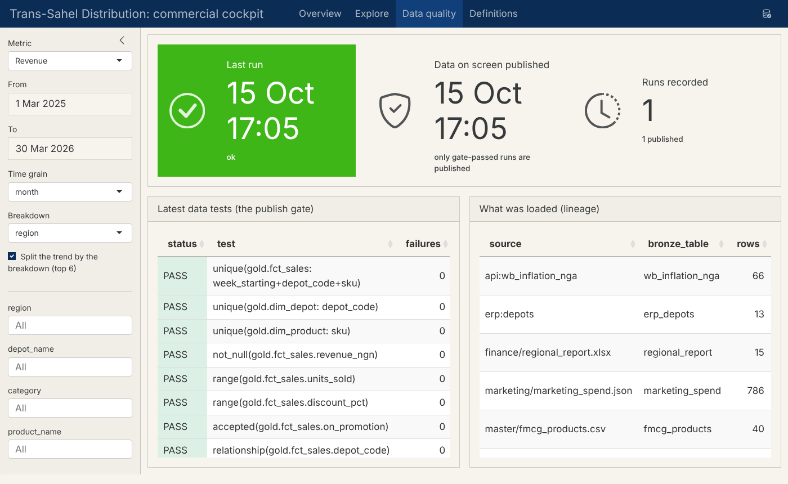
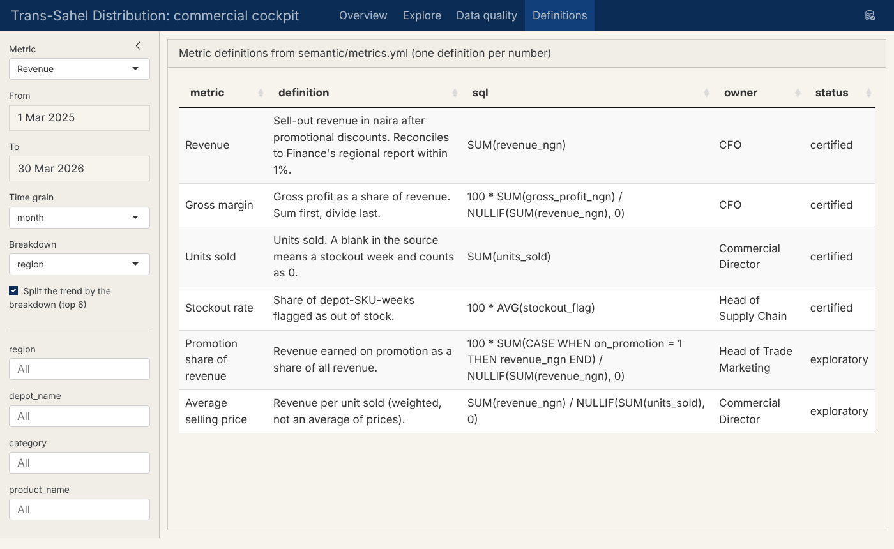

flowchart LR
A["🧠 Prompt<br/>(attach ai_context.md)"] --> B["Paste the answer<br/>into the named file"]
B --> C["▶ Run<br/>run_pipeline.R --to=stage"]
C --> D{"✔ Check"}
D -- "wrong" --> A
D -- "right" --> E["💾 Commit"]
E --> F["Next stage"]
Appendix F — DIY prompt book: from your raw data to a live dashboard
This appendix is a hands-on, do-it-yourself guide. You have data of all sorts in your organisation: spreadsheets on shared drives, exports from an enterprise resource planning (ERP) system, a customer relationship management (CRM) database, a web service or two. You want a live, interactive dashboard that people trust. This prompt book takes you there in fourteen stages. Each stage gives you:
- 🎯 the goal, in one sentence;
- 🧠 the prompt to paste into your artificial intelligence (AI) assistant, with
[[placeholders]]for your details; - ▶ the command to run;
- ✔ the check: what you should see, and how to tell it worked;
- 📗 the reference answer for a practice organisation, folded so you try first;
- 💾 the commit: the point at which to save your work in Git.
It is built on a starter kit: a ready-made project folder in which every layer of the architecture already works. You don’t write a pipeline engine or a dashboard from scratch. You write the parts that are specific to your organisation: what the data means, how to clean it, what to measure. Those are exactly the parts an AI assistant can help with, and that a person must check.
Download the starter kit first
⬇ diy-starter-kit.zip, about one megabyte. Unzip it, rename the my-analytics folder to your project’s name, and open that folder in Positron or RStudio. It contains the engine, the dashboard, templates for every file you will write, and a complete practice organisation with its data and reference answers.

semantic/metrics.yml, every filter from the gold layer, and the page refreshes itself when the nightly pipeline publishes.
F.1 How to use this prompt book
F.1.1 The loop at every stage
- Prompt. Start every AI session with the session primer (below), then the stage’s prompt. Attach
ai_context.md, which the kit rewrites on every run. It describes every table (columns, types, null %, ranges) without sending a single full record. - Paste the answer into the file the prompt names. The AI writes files; you place them.
- Run the stage. Every run starts again from the raw data, so you can run as often as you like.
- Check against the stage’s ✔ list. If something is wrong, paste the error or the surprising number back to the AI with “this is what I got; what is wrong?”.
- Commit when the check passes, so you can always go back.
F.1.2 Rehearse on the practice organisation first
The kit includes Trans-Sahel Distribution Ltd, the book’s running example. It has sources in every shape you will meet: a comma-separated values (CSV) sell-out file with re-sent rows, a “presentation” Excel report, a JavaScript Object Notation (JSON) export, a database and a web application programming interface (API) (see practice/README.md).
Rscript use_practice.R answers # load the practice data AND the reference answers
Rscript run_pipeline.R # build it
quarto serve dashboard.qmd # see the finished dashboard (10 minutes, start to finish)Then start again in a fresh copy of the kit with Rscript use_practice.R (data only), and work through the stages yourself. Compare with the folded reference answers as you go. When that feels routine, do it with your own data.
| Practice organisation | Your organisation | |
|---|---|---|
| Time | One day | One to three weeks, mostly waiting for access and agreeing definitions |
| Data | Supplied in the kit | Exports and read-only connections you request (Stages 2–3) |
| Rules | Written for you in the reference answers | Agreed with the data owners (Stage 4) |
F.1.3 The stages at a glance
| Stage | You build | You edit | Run | Book chapter |
|---|---|---|---|---|
| 0 | Your workbench | — | Rscript 00_setup.R |
Chapter 2 |
| 1 | The project and its brief | brief.md, config.yml |
— | Chapter 1 |
| 2 | Bronze from files | data/raw/, sources.yml |
--to=bronze |
Chapter 3, Chapter 6 |
| 3 | Bronze from databases and APIs | sources.yml, .Renviron |
--to=bronze |
Chapter 6, Appendix D |
| 4 | A profile and an issues log | docs/issues.md |
— | Chapter 4 |
| 5 | Silver: clean, typed, conformed | sql/silver/*.sql |
--to=silver |
Chapter 7 |
| 6 | Gold: facts, dimensions, one dashboard view | sql/gold/*.sql |
--to=gold |
Chapter 8 |
| 7 | The publish gate | tests/tests.yml |
--to=test |
Chapter 9 |
| 8 | The semantic layer | semantic/metrics.yml |
full run | Chapter 10 |
| 9 | One-command pipeline | — | Rscript run_pipeline.R |
Chapter 14 |
| 10 | The live dashboard | dashboard.qmd (title, extras), theme.scss |
quarto serve |
Chapter 13 |
| 11 | Publishing | deploy.R |
Rscript deploy.R … |
Chapter 12, Chapter 16 |
| 12 | Schedule and alerts | schedule/, .Renviron |
your scheduler | Chapter 14 |
| 13 | Security and governance | review | — | Chapter 15 |
| 14 | Extensions (optional) | — | — | Chapter 11 |
F.2 The session primer (paste at the start of every AI session)
AI assistants forget everything between sessions. This primer tells the assistant what the kit is, what it may assume and how to answer. Paste it first, every time, then attach ai_context.md.
F.3 Stage 0 · Install your workbench
🎯 Goal: R, Quarto, an editor and Git installed, and the kit’s checks all OK.
- Install R (4.3 or newer) from cran.r-project.org, Quarto from quarto.org, and Git from git-scm.com.
- Install an editor: Positron (positron.posit.co) or RStudio. Positron includes an AI assistant pane; any assistant you are allowed to use works.
- Unzip the starter kit, rename the folder, open it in the editor and, in its terminal, run:
Rscript 00_setup.R✔ Check. Every line of the --- checks --- block says OK. (The optional database drivers matter only if you will pull from PostgreSQL, SQL Server or Oracle.)
💾 Commit. git init, then git add -A and git commit -m "Start from the DIY starter kit". The kit’s .gitignore already keeps data, secrets and generated files out of Git.
F.4 Stage 1 · Create the project and write the brief
🎯 Goal: one page that says who the dashboard is for, which decisions it supports, and which numbers matter.
Most dashboard projects fail here, not in the code. A clear brief tells you which sources you need, what “correct” means, and when you are done. The kit copies brief.md to the top of ai_context.md, so every later prompt knows your situation.
Then set your project’s name in config.yml (project:) and the title at the top of dashboard.qmd.
✔ Check. Every line of brief.md is filled in. Each key number has an owner and a decision. You can name the report you will reconcile to. If personal data is involved, set ai_context_samples: false in config.yml now (Stage 13 explains why).
📗 Reference answer (practice organisation)
practice/brief.md
- **Organisation and unit:** Trans-Sahel Distribution Ltd (practice organisation), Commercial Finance
- **The decisions this dashboard supports:** the weekly depot performance review; promotion planning; stockout follow-up
- **Audience:** regional managers (weekly), CFO and Commercial Director (monthly)
- **The 3–6 numbers that matter (with owners):** revenue (CFO), gross margin % (CFO), units sold (Commercial Director), stockout rate (Head of Supply Chain), promotion share of revenue (Head of Trade Marketing)
- **Breakdowns people ask for:** region, depot, product category, product
- **Time grain:** weekly (sell-out arrives weekly), reviewed monthly
- **Authoritative totals to reconcile to:** Commercial Finance's FY2025 regional report (revenue by depot and month)
- **Data protection notes:** no personal data in scope (depot- and product-level sales only)💾 Commit: "Brief and project settings".
F.5 Stage 2 · Land your files in bronze
🎯 Goal: every file the dashboard needs, loaded into bronze exactly as delivered, with lineage.
- Collect exports, don’t edit them. Ask each owner for the regular export (the one that could be produced again next month), not a hand-tidied copy. Keep originals as they arrive.
- Drop them into
data/raw/, one sub-folder per source (for exampledata/raw/sales/,data/raw/finance/). The kit reads CSV, tab-separated values (TSV), Excel (every sheet), Parquet and JSON. - Only what the brief needs. If a file holds personal data the brief doesn’t need, ask for an export without those columns. That is data minimisation, and it is easier than deleting later.
- Run:
Rscript run_pipeline.R --to=bronzeEach file becomes one table, bronze.<file name> (an Excel workbook with several sheets gives one table per sheet, bronze.<file>__<sheet>), and the run lists each with its row count. Open ai_context.md to see what landed.
Spreadsheets made for printing usually land wrongly the first time: title rows become the header, so columns are called ...2 and ...3. Fix that with read options in sources.yml, not by editing the file.
✔ Check.
- Every file you dropped in appears in the run output with a sensible row count. (Compare with the row count you see when you open the file.)
- Column names in
ai_context.mdmatch the files’ real headers. ERRORlines name a file and a reason: fix the read option or ask for a cleaner export.
📗 Reference answer (practice organisation)
Finance’s regional report has four title rows above the header, so it needs skip: 4. The other files land correctly as they are. The files: section of sources.yml (full file in Stage 3):
files:
"finance/regional_report.xlsx":
skip: 4💾 Commit: "Land raw files in bronze" (the data itself stays out of Git; the read options go in).
F.6 Stage 3 · Connect databases and web APIs
🎯 Goal: system data pulled straight from the source, on every run, with no manual exports.
sources.yml lists databases (SQLite, DuckDB, PostgreSQL, and SQL Server, Oracle or others through Open Database Connectivity (ODBC)) and web APIs (JSON or CSV). Passwords and tokens go in .Renviron; sources.yml only holds the names of those variables. API responses are cached, so a failed call falls back to the last good copy.
Asking information technology (IT) for access: what to request
A read-only account; access to a view or a reporting replica rather than live production tables; the host, port, database name and driver; and the time window when queries are allowed. Ask for exactly the tables in your brief. You are much more likely to get a quick yes.
Then fill in .Renviron (restart R after editing) and run Rscript run_pipeline.R --to=bronze again.
✔ Check. Each source appears as bronze.<name>_<table> with a row count you can confirm with the system owner. Re-run it: the counts are the same, because every run rebuilds from the sources. No password appears in any file you would commit (git status should not list .Renviron).
📗 Reference answer (practice organisation)
The depot master comes from the ERP database, and Nigeria’s inflation comes from the World Bank’s open API (see Appendix D for International Monetary Fund (IMF), United Nations (UN) Comtrade, United Nations Conference on Trade and Development (UNCTAD) and Nigerian sources):
practice/sources.yml
# Practice organisation: Trans-Sahel Distribution Ltd (reference answer for Stage 3)
files:
"finance/regional_report.xlsx":
skip: 4 # four title rows above the header (Chapter 3)
databases:
- name: erp
driver: sqlite
path: data/systems/erp.sqlite
tables: [depots]
apis:
- name: wb_inflation_nga
url: "https://api.worldbank.org/v2/country/NGA/indicator/FP.CPI.TOTL.ZG?format=json&per_page=100"
format: json
pick: 2 # World Bank returns [metadata, data]: keep the data💾 Commit: "Pull from ERP and World Bank".
F.7 Stage 4 · Profile before you trust
🎯 Goal: a written list of every data problem, with the rule that fixes it and the person who must agree to that rule.
This stage writes no code. It’s the conversation that makes silver possible. The AI spots patterns in ai_context.md; the data owners decide what they mean.
Run the suggested checks (in Positron, open data/db/dev.duckdb with the database pane, or in R DBI::dbGetQuery()), then take the issues log to the owners. Their answers become the comments in your silver SQL.
✔ Check. Every issue has evidence and an owner. Every rule that changes a number (for example “blank units mean a stockout, so 0”) has been confirmed by that owner, in writing.
📗 Reference answer (practice organisation)
| Table | Issue | Evidence | Rule | Confirmed by |
|---|---|---|---|---|
fmcg_sell_out |
Re-sent rows: 214 keys (week × depot × stock-keeping unit (SKU)) appear twice | GROUP BY key HAVING COUNT(*) > 1 |
keep the first row loaded | Commercial Finance |
fmcg_sell_out |
units_sold and revenue_ngn blank in about 1.4% of rows |
null % in ai_context.md | blank means stockout: units and revenue = 0, keep a flag | board pack Notes sheet |
fmcg_sell_out, fmcg_products |
every number stored as text | type VARCHAR |
cast in silver; TRY_CAST where values may be dirty |
— |
erp_depots |
DP04 listed twice: “Abuja Central” renamed “Abuja Central (Wuse II)” | 13 rows, 12 codes | keep both versions (slowly changing dimension, type 2); the rename took effect 2025-10-01 | Commercial |
regional_report |
merged region cells, ₦ text values, an “All depots” total row and a footnote |
example values | fill down, parse numbers, drop total and footnote | Commercial Finance |
marketing_spend |
runs three months past the last sales week | max week_starting differs |
compare only overlapping weeks | Marketing |
| all | Financial year 2025 (FY2025) sales should match Finance’s regional report | brief | reconcile within 1% per depot (a test, Stage 7) | Chief financial officer (CFO) |
💾 Commit: "Issues log agreed with owners".
F.8 Stage 5 · Silver: clean, type and conform
🎯 Goal: one silver table per real-world thing, typed and cleaned by written, agreed rules.
Write one SQL file per silver table, numbered in the order they must run (01_depots.sql, 02_products.sql, …). Each file reads only bronze (or earlier silver) tables.
Rscript run_pipeline.R --to=silver✔ Check.
- Each file runs (
ok) and the run lists the silver table it created with a row count. - Row counts make sense: silver = bronze − duplicates − quarantined rows. Write the arithmetic down.
- The two proof queries from the prompt return what you expect (for example, zero duplicate keys).
- An error stops the run and names the file and line. Paste it back to the AI.
📗 Reference answer (practice organisation)
Five files. The sell-out table shows the typical pattern:
practice/sql/silver/03_sell_out.sql
-- silver.sell_out: typed weekly sell-out, one row per week x depot x SKU.
-- Rule (board pack Notes sheet): a blank units_sold means a stockout week -> 0, and we keep the evidence flag.
-- Rule: re-sent rows for the same key collapse to the first one loaded (214 duplicate keys in the source).
CREATE OR REPLACE TABLE silver.sell_out AS
SELECT CAST(week_starting AS DATE) AS week_starting,
trim(depot_code) AS depot_code,
trim(sku) AS sku,
COALESCE(TRY_CAST(units_sold AS DOUBLE), 0) AS units_sold,
TRY_CAST(unit_price_ngn AS DOUBLE) AS unit_price_ngn,
CAST(on_promotion AS INTEGER) AS on_promotion,
CAST(discount_pct AS DOUBLE) AS discount_pct,
CAST(stockout_flag AS INTEGER) AS stockout_flag,
COALESCE(TRY_CAST(revenue_ngn AS DOUBLE), 0) AS revenue_ngn,
units_sold IS NULL AS units_was_blank
FROM bronze.fmcg_sell_out
QUALIFY row_number() OVER (PARTITION BY week_starting, depot_code, sku ORDER BY _row) = 1;practice/sql/silver/04_regional_report.sql
-- silver.regional_report: Finance's printed FY2025 Excel report made tidy, for reconciliation.
-- Fill the merged region cells down, drop the "All depots" total and the footnote, unpivot the
-- twelve month columns, and turn "₦149,023,348" into a number.
CREATE OR REPLACE TABLE silver.regional_report AS
WITH filled AS (
SELECT last_value(region IGNORE NULLS) OVER (ORDER BY _row) AS region, depot,
Jan, Feb, Mar, Apr, May, Jun, Jul, Aug, Sep, Oct, Nov, Dec
FROM bronze.regional_report
WHERE depot IS NOT NULL AND depot <> 'All depots'
), long AS (
UNPIVOT filled ON Jan, Feb, Mar, Apr, May, Jun, Jul, Aug, Sep, Oct, Nov, Dec INTO NAME mon VALUE revenue_txt
)
SELECT region, depot AS depot_name,
strptime('2025 ' || mon || ' 01', '%Y %b %d')::DATE AS month,
CAST(regexp_replace(revenue_txt, '[^0-9.]', '', 'g') AS DOUBLE) AS revenue_ngn
FROM long;The other three (01_depots.sql, 02_products.sql, 05_marketing_and_macro.sql) are in practice/sql/silver/ in the kit.
💾 Commit: "Silver layer".
F.9 Stage 6 · Gold: model for decisions
🎯 Goal: facts and dimensions at a declared grain, small marts for spreadsheet users, and one wide view for the dashboard.
First decide the shape; then write it.
Rscript run_pipeline.R --to=gold✔ Check. gold.v_dashboard has the same row count as its fact table (no fan-out). Its date column really is a date. Its breakdown columns hold the values people use in meetings (names, not codes).
📗 Reference answer (practice organisation)
practice/sql/gold/02_fct_sales.sql
-- Grain: one row per week x depot x SKU (a periodic snapshot fact).
CREATE OR REPLACE TABLE gold.fct_sales AS
SELECT s.week_starting, s.depot_code, s.sku,
s.units_sold, s.revenue_ngn,
s.revenue_ngn - s.units_sold * p.unit_cost_ngn AS gross_profit_ngn,
s.on_promotion, s.discount_pct, s.stockout_flag, s.units_was_blank
FROM silver.sell_out s
JOIN silver.products p USING (sku);practice/sql/gold/03_v_dashboard.sql
-- The one wide view the dashboard and the semantic layer read: the star, pre-joined.
CREATE OR REPLACE VIEW gold.v_dashboard AS
SELECT f.week_starting, d.region, d.depot_name, p.category, p.product_name,
f.units_sold, f.revenue_ngn, f.gross_profit_ngn, f.on_promotion, f.discount_pct, f.stockout_flag
FROM gold.fct_sales f
JOIN gold.dim_depot d USING (depot_code)
JOIN gold.dim_product p USING (sku);The dimensions and marts are in practice/sql/gold/ in the kit.
💾 Commit: "Gold layer".
F.10 Stage 7 · The publish gate
🎯 Goal: automated tests that stop wrong numbers from ever reaching the dashboard.
Each test in tests/tests.yml counts the rows that break a rule. Zero means PASS. With severity: error (the default), any failure keeps the previous good warehouse live; severity: warn reports but still publishes. The eight types are the ones in Chapter 9: unique, not_null, accepted, range, relationship, fresh, rowcount and custom (any SQL that returns a count).
Rscript run_pipeline.R --to=test✔ Check.
- Every test runs and says
PASS(orWARNfor freshness on old data). - Prove the gate works. Copy a raw file, break one value on purpose (a negative quantity, a duplicated line), run the full pipeline, and watch it refuse to publish:
FAIL, anALERTline, andwarehouse.failed.duckdbkept for inspection. Restore the file and run again. - If the reconciliation fails on real data, don’t loosen it. Find out why. It is the most valuable test you have.
📗 Reference answer (practice organisation)
practice/tests/tests.yml
# Practice organisation: the publish gate (reference answer for Stage 7)
- {type: unique, table: gold.fct_sales, columns: [week_starting, depot_code, sku]}
- {type: unique, table: gold.dim_depot, columns: [depot_code]}
- {type: unique, table: gold.dim_product, columns: [sku]}
- {type: not_null, table: gold.fct_sales, column: revenue_ngn}
- {type: range, table: gold.fct_sales, column: units_sold, min: 0}
- {type: range, table: gold.fct_sales, column: discount_pct, min: 0, max: 0.5}
- {type: accepted, table: gold.fct_sales, column: on_promotion, values: ["0", "1"]}
- {type: relationship, table: gold.fct_sales, column: depot_code, ref_table: gold.dim_depot}
- {type: relationship, table: gold.fct_sales, column: sku, ref_table: gold.dim_product}
- {type: rowcount, table: gold.fct_sales, min: 50000}
# The practice data ends in March 2026, so freshness is measured against a fixed date.
# With your own data, delete the as_of line so it is measured against today.
- {type: fresh, table: gold.fct_sales, column: week_starting, max_days: 21, as_of: "2026-04-14", severity: warn}
- type: custom
name: "reconcile: FY2025 revenue by depot vs Finance's regional report (within 1%)"
sql: |
WITH xl AS (SELECT h.depot_code, SUM(r.revenue_ngn) AS xl
FROM silver.regional_report r
JOIN (SELECT DISTINCT depot_code, depot_name FROM silver.depot_history) h USING (depot_name)
GROUP BY 1),
wh AS (SELECT depot_code, SUM(revenue_ngn) AS wh FROM gold.fct_sales
WHERE year(week_starting) = 2025 GROUP BY 1)
SELECT COUNT(*) FROM xl JOIN wh USING (depot_code) WHERE abs(xl / wh - 1) > 0.01💾 Commit: "Publish gate".
F.11 Stage 8 · The semantic layer
🎯 Goal: every number on the dashboard defined once, with an owner, in semantic/metrics.yml.
The dashboard has no formulas of its own. It reads the model section (which view, which date column, which breakdowns) and the metrics section (one SQL expression per number). Change a definition here and every page, every filter and every export changes with it.
✔ Check. For one month, each metric matches your hand calculation and, for the certified ones, the owner’s own figure. Only metrics the owner has approved are marked certified.
📗 Reference answer (practice organisation)
practice/semantic/metrics.yml
# Practice organisation: the semantic layer (reference answer for Stage 8)
model:
table: gold.v_dashboard
time: week_starting
grain: month
dimensions: [region, depot_name, category, product_name]
metrics:
revenue:
label: Revenue
sql: SUM(revenue_ngn)
format: currency
kpi: true
owner: CFO
status: certified
description: Sell-out revenue in naira after promotional discounts. Reconciles to Finance's regional report within 1%.
gross_margin_pct:
label: Gross margin
sql: 100 * SUM(gross_profit_ngn) / NULLIF(SUM(revenue_ngn), 0)
format: pct
kpi: true
owner: CFO
status: certified
description: Gross profit as a share of revenue. Sum first, divide last.
units:
label: Units sold
sql: SUM(units_sold)
format: number
kpi: true
owner: Commercial Director
status: certified
description: Units sold. A blank in the source means a stockout week and counts as 0.
stockout_rate_pct:
label: Stockout rate
sql: 100 * AVG(stockout_flag)
format: pct
kpi: true
owner: Head of Supply Chain
status: certified
description: Share of depot-SKU-weeks flagged as out of stock.
promo_share_pct:
label: Promotion share of revenue
sql: 100 * SUM(CASE WHEN on_promotion = 1 THEN revenue_ngn END) / NULLIF(SUM(revenue_ngn), 0)
format: pct
owner: Head of Trade Marketing
status: exploratory
description: Revenue earned on promotion as a share of all revenue.
avg_selling_price:
label: Average selling price
sql: SUM(revenue_ngn) / NULLIF(SUM(units_sold), 0)
format: currency
owner: Commercial Director
status: exploratory
description: Revenue per unit sold (weighted, not an average of prices).💾 Commit: "Semantic layer".
F.12 Stage 9 · One command: run the whole pipeline
🎯 Goal: raw data to a tested, published warehouse with one command, safe to run at any time.
Rscript run_pipeline.RWhat happens, in order:
- A fresh copy of the warehouse is built from the raw data: bronze, silver, gold.
- The tests run. Results are stored in the warehouse and appended to
logs/test_history.csv. - Gate open: the new warehouse replaces the live one in a single rename (the atomic swap), and every gold table is copied to
data/serve/mart.sqlitefor Excel and Power BI users. - Gate closed: nothing changes for users. The failed build is kept as
warehouse.failed.duckdb, and an alert goes tologs/alerts.log(and to Teams or Slack, if you setALERT_WEBHOOK_URL). - A lock file stops two runs overlapping, and
logs/run_history.csvrecords every run.
✔ Check. The run ends with PUBLISHED. data/db/warehouse.duckdb and data/serve/mart.sqlite exist. Running it twice in a row gives the same numbers. Open mart.sqlite from Excel (Data → Get Data → From ODBC, with the SQLite ODBC driver) or Power BI to confirm the marts are usable.
💾 Commit: "First full run".
F.13 Stage 10 · The live dashboard
🎯 Goal: the interactive dashboard running on your own gold layer.
quarto serve dashboard.qmdYour browser opens the dashboard. Nothing in it was written for your organisation: it builds its controls, filters, key performance indicator (KPI) cards and pages from semantic/metrics.yml and the warehouse.
| Page | What it shows |
|---|---|
| Overview | Up to four KPI cards with the change against the previous period; a trend at the chosen grain (optionally split by the breakdown); a ranked breakdown |
| Explore | Every metric by the chosen breakdown, sortable, with CSV download |
| Data quality | The last run, the data on screen and when it was published, the latest test results, and what was loaded from where |
| Definitions | The metric definitions, owners and status, straight from metrics.yml |
The sidebar holds the metric, the period, the time grain, the breakdown and a filter for every dimension. While the page is open it watches the warehouse file, and updates itself within refresh_seconds of a new publish.


Then make it yours:
- Brand: change the colours and font in
theme.scss, and the title indashboard.qmd. - A page of your own: the generic pages cover most needs. For something specific, such as a marketing page from a mart, use this prompt.
✔ Check. All pages load without error boxes. Filters change every chart and the KPI cards. The CSV download matches the table. The Data quality page shows the run you just made.
💾 Commit: "Dashboard customised".
F.14 Stage 11 · Publish it for colleagues
🎯 Goal: the people in your brief can open the dashboard in a browser, and nobody else can.
| Option | When to choose it | How |
|---|---|---|
| Posit Connect (your organisation’s server) | Data must stay inside the organisation; sign-in with company accounts; scheduled refresh on the server | Rscript deploy.R connect, then schedule run_pipeline.R on the server (Stage 12) |
| Posit Connect Cloud | A quick, managed start; small teams | Rscript deploy.R connect, or Rscript deploy.R manifest and deploy from GitHub (only for data you may store in GitHub) |
| shinyapps.io | Demos and teaching | Rscript deploy.R shinyapps |
| A static version | No server allowed; an emailed or SharePoint pack | Export small cubes and render a static Quarto dashboard (Chapter 13) |
| The SQLite mart | Users live in Excel or Power BI | Share data/serve/mart.sqlite through the ODBC driver, or schedule a copy to a shared drive (Chapter 12) |
✔ Check. A colleague named in the brief can open the address and sees the same numbers as you. Someone not on the list cannot. The “Warehouse built” time at the bottom of the sidebar changes after the next scheduled run.
💾 Commit: "Deployment settings" (never commit account tokens; rsconnect/ is already in .gitignore).
F.15 Stage 12 · Schedule, monitor and alert
🎯 Goal: the pipeline runs itself, and people hear about failures before anyone sees a wrong number.
schedule/README.md gives ready-made entries for cron (macOS and Linux), Windows Task Scheduler, GitHub Actions and Posit Connect. For alerts, create an incoming webhook in a Microsoft Teams or Slack channel and put its address in .Renviron as ALERT_WEBHOOK_URL.
✔ Check. The next morning, logs/run_history.csv has a new line with published = TRUE. Break a raw file on purpose once: the alert reaches the channel, and the dashboard keeps showing the last good data, stamped with its publish time.
💾 Commit: "Scheduled".
F.16 Stage 13 · Secure and govern
🎯 Goal: the platform meets your data-protection duties, and the numbers have owners.
Work through this list with your data protection officer (DPO) and the metric owners. The detail is in Chapter 15.
✔ Check. Every box above is ticked or has a named person and a date next to it.
F.17 Stage 14 · Extensions (optional)
Once the core is running, each of these is one more stage of the same loop:
- Ask your data. Add a page where people type a question, an AI writes SQL against
gold.v_dashboardand the metric definitions, a person reviews it, and it runs read-only with a row cap. The guardrails are in Chapter 11; ask the AI to build it using the kit’sq()andM(). - Search text by meaning. Complaints, reviews or exit-interview comments become a vector index next to the gold layer (Chapter 11).
- Write-back. Targets or corrections entered in a Power Apps form (Dataverse) or a PostgreSQL app become a new source in
sources.yml. Data still flows one way (Chapter 12). - More official data. World Bank, IMF, UN Comtrade, UNCTAD and Nigerian sources, as APIs in
sources.yml(Appendix D). - A second subject area. Add facts that share your dimensions (a bus matrix), and a second view and
metrics.ymlmodel for another dashboard.
F.18 Definition of done
F.19 Troubleshooting by stage
| Symptom | Likely cause | Fix |
|---|---|---|
there is no package called … |
Setup incomplete | Re-run Rscript 00_setup.R; read the first error |
| A file is missing from bronze | Unsupported extension, or a hidden or temporary file (a name starting with ~$ or .) |
Save as CSV or Excel workbook (XLSX); close the file in Excel; rename it |
Columns called ...2, ...3 |
Title rows above the header | skip: in sources.yml (Stage 2) |
₦ instead of ₦ |
File saved in a legacy encoding | encoding: latin1 in sources.yml, or save as “CSV UTF-8” |
ERROR for a database source |
Driver, network or credentials | Check .Renviron names match sources.yml; test the connection in R; ask IT about firewalls |
API source says ok (cached copy) |
The API was unreachable; last good copy used | Fine for a day; check the URL, key or quota if it persists |
Conversion Error in silver |
A value that won’t cast | Use TRY_CAST and quarantine; find the value with the AI’s proof query |
| Gold has more rows than expected | Fan-out: joining on a key that isn’t unique | Check dimension uniqueness tests; aggregate before joining |
| Reconciliation test fails | Real difference, period mismatch, or a rule not applied | Compare month by month; don’t loosen the tolerance without the owner |
Another run is in progress |
A previous run was interrupted | Make sure no run is active, then delete data/db/.lock |
| Dashboard says “No dashboard data yet” | No published warehouse, or metrics.yml points at a missing view |
Run the full pipeline; check model.table |
| Dashboard numbers didn’t change after a run | The gate closed, so the old data is still live | Check the Data quality page and logs/alerts.log |
F.20 The whole prompt chain on one page
| Prompt | Stage | You get |
|---|---|---|
| F0 | Every session | An assistant that knows the kit, the rules and your data’s shape |
| F0.1 | 0 | A working installation |
| F1 | 1 | brief.md |
| F2 | 2 | Read options for awkward files |
| F3 | 3 | Database and API entries for sources.yml and .Renviron |
| F4 | 4 | docs/issues.md: problems, rules and owners |
| F5 | 5 | sql/silver/NN_*.sql, one per table, with proof queries |
| F6a, F6b | 6 | A gold design with grains, then sql/gold/*.sql and gold.v_dashboard |
| F7 | 7 | tests/tests.yml, including reconciliation |
| F8 | 8 | semantic/metrics.yml, with hand-check queries |
| F9 | 9 | A diagnosis of any failed run |
| F10 | 10 | A custom dashboard page |
| F11 | 11 | A hosting choice and the steps to publish |
| F12 | 12 | A schedule on your own infrastructure |
| F13 | 13 | A data-protection review and the questions for your DPO |